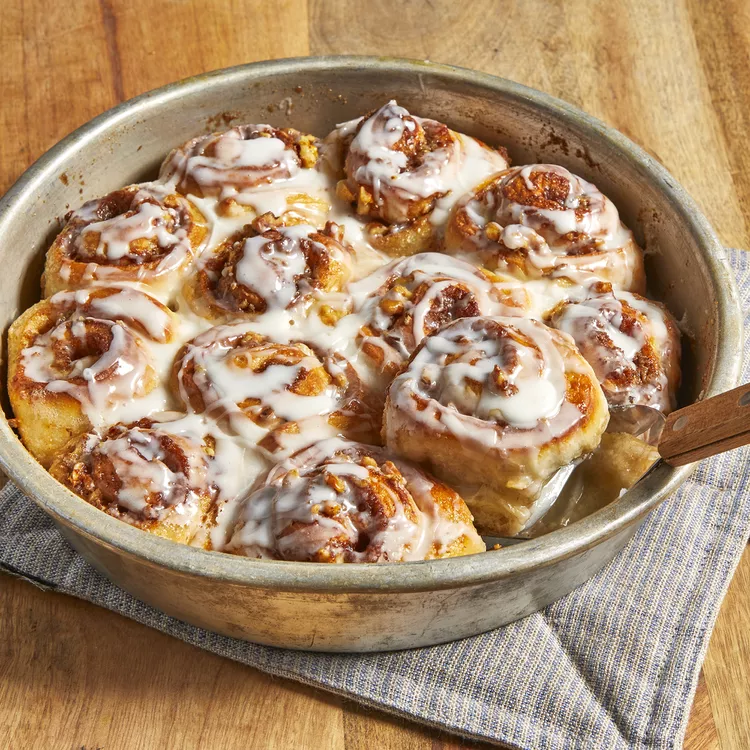

Cinnamon Rolls

Description:
These cinnamon rolls are so easy and such a treat! You can make them without yeast, which is an added bonus. Follow along to have a wonderful treat.
Ingredients
- 1 pound frozen bread dough
- 3 tbsp melted butter
- 2/3 cups brown sugar
- 1/2 cup chopped walnuts
- 1 tsp ground cinnamon
- 1 tsp water (or as needed)
- 1/3 cup heavy whipping cream
- 2/3 cup sifted confectioners' sugar
- 2 tbsp milk
- A dash of vanilla extract
Steps
- Lightly grease 2 round cake-pans with butter.
- Roll bread dough out to an 6x18-inch rectangle. Brush with melted butter. Combine brown sugar, walnuts, and cinnamon in a small bowl; sprinkle over butter. Roll dough into a log, starting at the long edge. Moisten edge with water and seal. Cut log into 20 slices; arrange rolls, cut sides down, in prepared cake pans. Cover with a towel and let rise in a warm place until doubled in volume, about 90 minutes.
- Preheat oven to 350 degrees F (175 degrees C). Pour heavy cream over dough.
- Bake in preheated oven until golden brown, about 25 minutes.
- Mix confectioners' sugar, milk, and vanilla extract in a small bowl; drizzle over warm cinnamon rolls to serve.